Sweet Clydes Inversion Theorem
Math Club Event!
Oxford College of Emory University Tien Chih
Permutations
A permutation on \(n\) objects is a rearrangement of those objects.
More formally a bijection. \(f:[5]\to[5]\) sends \(1\mapsto 5, 2\mapsto 1, 3\mapsto 4, 4\mapsto 3, 5\mapsto 2, \)
Permutations
The identity is a permutation.
Permutations
Permutations may be composed.
What is \(g\circ f\)?
Permutations
Permutations may be composed.
What is \(g\circ f\)?
Permutations
Permutations may be composed.
What is \( f\circ g\)?
Permutations
Permutations may be composed.
What is \( f\circ g\)?
Composition is non-commutative.
Permutations
Permutations may be inverted.
What should \(f^{-1}\) be so that \(f^{-1}\circ f =id\)?
Permutations
Permutations may be inverted.
What should \(f^{-1}\) be so that \(f^{-1}\circ f =id\)?
Permutations
A group is a set \(G\) along with a binary operation \(*\) satisfying.
- Closure: Given any \(a, b\in G\), we have \(a*b\in G\).
- Associativity: Given any \(a, b, c\in G\), we have \(a*(b*c) = (a*b)*c\).
- Identity: There is an element \(e\in G\), so that for any \(a\in G\), \(a*e=e=e*a\).
- Inverses: Given any \(a\in G\), there is an \(a^{-1}\in G\) so that \(a*a^{-1}=e\).
The set of permutations on a set form a group with the composition operation.
We often use cycle notation to describe a permutation. \[(ablx)\] describes the permutation that sends \(a\mapsto b, b\mapsto l, l\mapsto x, x\mapsto a\)
\((abc)(cd) = (abdc)\)
\( (cd)(abc) = (cdab)\)
\((abc)(xyz) = (xyz)(abc)\)
\(f=(1,5,2)(3,4)=(3,4)(1,5,2)\).
Each permutation may be written as a product of disjoint cycles.
Write \(g\) as the product of disjoint cycles.
Each cycle (and thus permutation) may be written as a product of two-cycles or transpositions (L to R). \[(a_1a_2a_3a_4a_5) = (a_4a_5)(a_3a_4)(a_2a_3)(a_1a_2).\]
\[(a_1a_2a_3a_4a_5)^{-1}=(a_5a_4a_3a_2a_1) = (a_1a_2)(a_2a_3)(a_3a_4)(a_4a_5).\]
THE BIG QUESTION
Permutations are the product of transpositions.
To invert a permutation, we could just reverse the order of transpositions.
But what if we couldn't re-use transpositions?
Sweet Clyde's Inversion Theorem
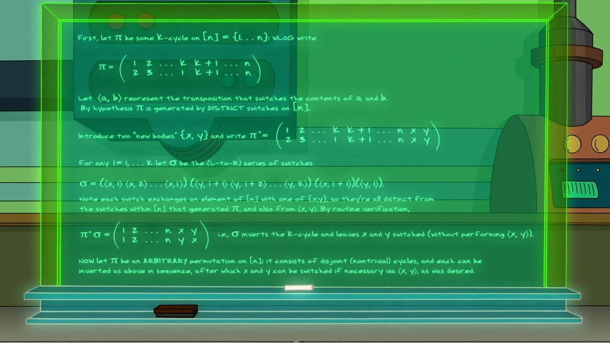Ken Keeler
THE Strategy
For an inversion scheme with two additional elements \(X, Y\), it suffices that:
- It can generate any cycle.
- It only uses \((aX)\) or \((aY)\) transpositions.
- The set \(\{X, Y\}\) is preserved.
Why?
Let \(1\leq \ell \leq k\). Consider \[ \left[(a_1X)(a_2X)\cdots(a_{\ell}X)\right] \left[(a_{\ell+1}Y)(a_{\ell+2}Y)\cdots (a_{k}Y)\right] (a_{\ell+1}X) (a_{1}Y)\]
\[ \left[(a_1a_2\cdots a_{\ell}X)\right]\left[(a_{\ell+1}Y)(a_{\ell+2}Y)\cdots (a_{k}Y)\right] (a_{\ell+1}X) (a_{1}Y)\]
\[ \left[(a_1a_2\cdots a_{\ell}X)\right]\left[(a_{\ell+1}a_{\ell+2}\cdots a_{k}Y)\right] (a_{\ell+1}X) (a_{1}Y)\]
\[(a_1a_2\cdots a_{\ell} a_{\ell+1}a_{\ell+2}\cdots a_{k})(XY)\] QED
Permuting

\[(PA)\]
Permuting

\[(AP)(AB)\]
Permuting
\[(AP)(AB)(LP)\]
Permuting
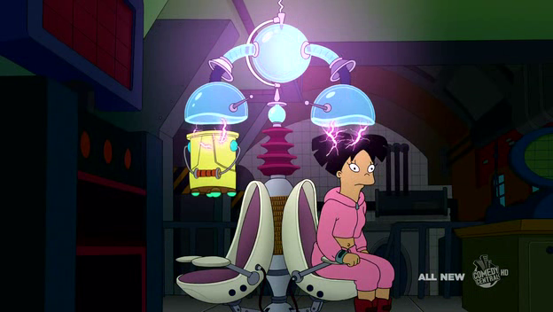\[(AP)(AB)(LP)(WA)\]
Permuting
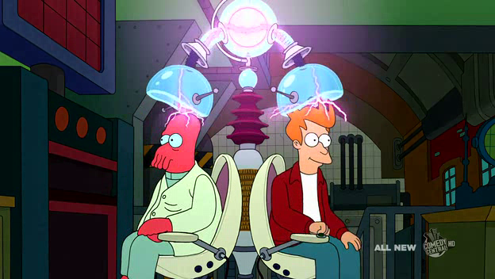\[(AP)(AB)(LP)(WA)(ZF)\]
Permuting
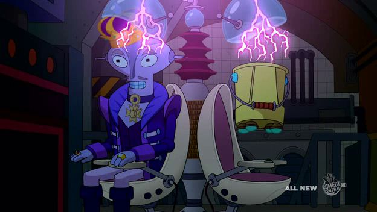\[(AP)(AB)(LP)(WA)(ZF)(WE)\]
Permuting (last one!)
\[(AP)(AB)(LP)(WA)(ZF)(WE)(HL)\]
The final Permutation
\[(AHLPBEW)(ZF)\]
Inverting (ZF)
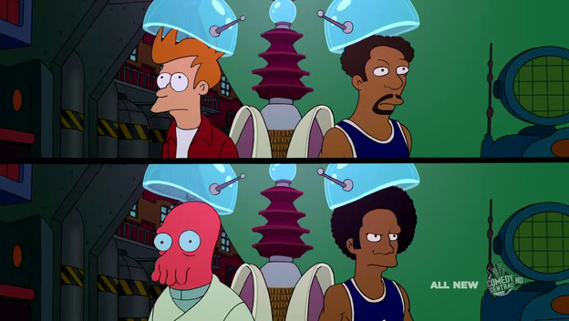\[(AHLPBEW)(ZF)\]
\[(FX)(ZY)\]
Inverting (ZF) (last one!)
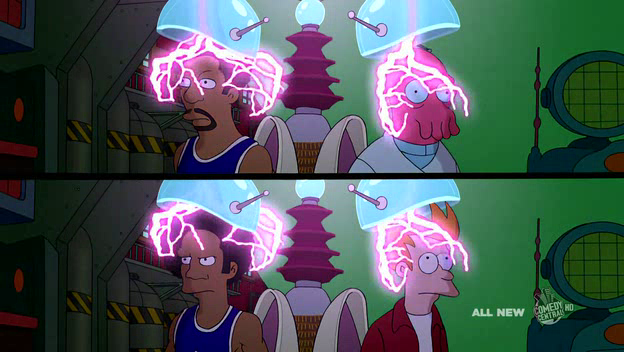\[(AHLPBEW)(ZF)\]
\[(FX)(ZY)(ZX)(FY)\]
Inverting (ZF)
\[(AHLPBEW)(ZF)\]
\[(FZ)(XY)\]
Inverting (ZF) (applying)
\[(AHLPBEW)(ZF)(FZ)(XY)\]
Inverting (ZF) (applying)
\[(AHLPBEW)(XY)\]
Inverting (ZF) (applying)
\[(XY)(AHLPBEW)\]
Inverting (AHLPBEW)
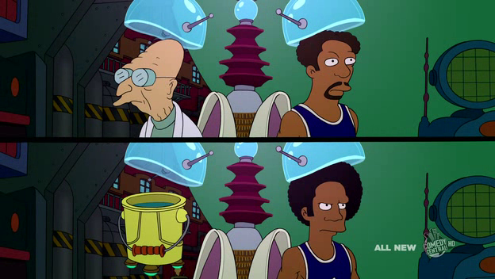\[(XY)(AHLPBEW)\]
\[(PX)(WY)\]
Inverting (AHLPBEW)
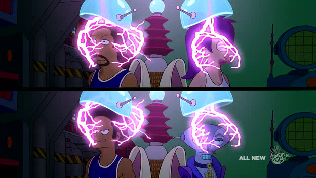\[(XY)(AHLPBEW)\]
\[(PX)(WY)(LX)(EY)\]
Inverting (AHLPBEW)
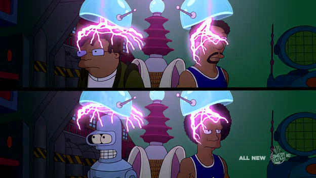\[(XY)(AHLPBEW)\]
\[(PX)(WY)(LX)(EY)(HX)(BY)\]
Inverting (AHLPBEW)
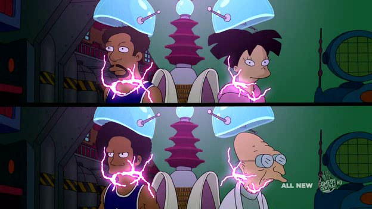\[(XY)(AHLPBEW)\]
\[(PX)(WY)(LX)(EY)(HX)(BY)(AX)(PY)\]
Inverting (AHLPBEW) (last one!)
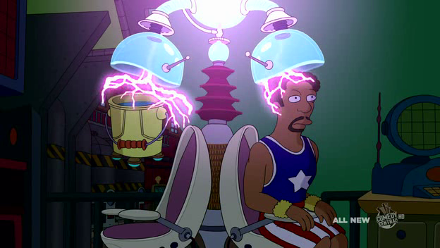\[(XY)(AHLPBEW)\]
\[(PX)(WY)(LX)(EY)(HX)(BY)(AX)(PY)(WX)\]
Inverting (AHLPBEW)
\[(XY)(AHLPBEW)\]
\[(PX)(LX)(HX)(AX)(WY)(EY)(BY)(WX)(PY)\]
Inverting (AHLPBEW)
\[(XY)(AHLPBEW)\]
\[ \left[(PX)(LX)(HX)(AX)\right] \left[(WY)(EY)(BY)\right](WX)(PY)\]
Inverting (AHLPBEW)
\[(XY)(AHLPBEW)\]
\[ \left[(PLHAX)\right] \left[(WEBY)\right](WX)(PY)\]
Inverting (AHLPBEW)
\[(XY)(AHLPBEW)\]
\[ (PLHAWEBY)(XY)\]
Inverting (AHLPBEW) (applying)
\[(XY)(AHLPBEW)(PLHAWEBY)(XY)\]
\[ \]
Inverting (AHLPBEW) (applying)
\[(XY)(XY)\]
\[ \]
Inverting (AHLPBEW) (applying)
\[id\]
\[ \]
Let \(1\leq \ell \leq k\). Consider \[ \left[(a_1X)(a_2X)\cdots(a_{\ell}X)\right] \left[(a_{\ell+1}Y)(a_{\ell+2}Y)\cdots (a_{k}Y)\right] (a_{\ell+1}X) (a_{1}Y)\]
\[ \left[(a_1a_2\cdots a_{\ell}X)\right]\left[(a_{\ell+1}Y)(a_{\ell+2}Y)\cdots (a_{k}Y)\right] (a_{\ell+1}X) (a_{1}Y)\]
\[ \left[(a_1a_2\cdots a_{\ell}X)\right]\left[(a_{\ell+1}a_{\ell+2}\cdots a_{k}Y)\right] (a_{\ell+1}X) (a_{1}Y)\]
\[(a_1a_2\cdots a_{\ell} a_{\ell+1}a_{\ell+2}\cdots a_{k})(XY)\]